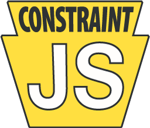

ConstraintJS keeps values up to date automatically. A constraint is a value that can be computed from other constraints; when one of those changes, everything that depends on it updates. On top of that, ConstraintJS provides DOM bindings, finite-state machines, and a Handlebars-style template language whose output stays in sync with your data.
import cjs from "constraintjs";
const width = cjs(10);
const height = cjs(20);
const area = width.mul(height); // or: cjs(() => width.get() * height.get())
area.get(); // 200
width.set(15);
area.get(); // 300
// Keep the DOM in sync
cjs.bindText(document.getElementById("area"), "Area: ", area);
// ...or use a template
const box = cjs.createTemplate("<div>{{width}} × {{height}} = {{area}}</div>", { width, height, area });
document.body.append(box);
For documentation and the full API, visit the ConstraintJS website and its API reference.
npm install constraintjs
import cjs from "constraintjs"; // ES modules
const cjs = require("constraintjs"); // CommonJS
Or load it with a <script> tag, which defines a global cjs:
<script src="https://cdn.jsdelivr.net/npm/constraintjs/dist/constraintjs.global.min.js"></script>
ConstraintJS includes TypeScript types. Types can be imported by name (import cjs, { type Constraint } from "constraintjs") or used as cjs.Constraint<T>.
You'll need Node.js 22.18 or later.
npm install
npm test # run the tests (Vitest, in jsdom)
npm run build # build dist/ (ES module, CommonJS, and <script> bundles, with types)
npm run check # type-check, lint, check formatting, and test
npm run docs # generate API documentation in docs/
The source is in src/ (TypeScript) and the tests are in test/. npm run test:watch re-runs the tests as you edit, and npm run coverage reports test coverage.
The website is the gh-pages branch. To update it for a release, check that branch out somewhere and run npm run pages -- <path to the checkout>, which adds the new <script> bundles and API reference to it.
See CHANGELOG.md for what's changed.